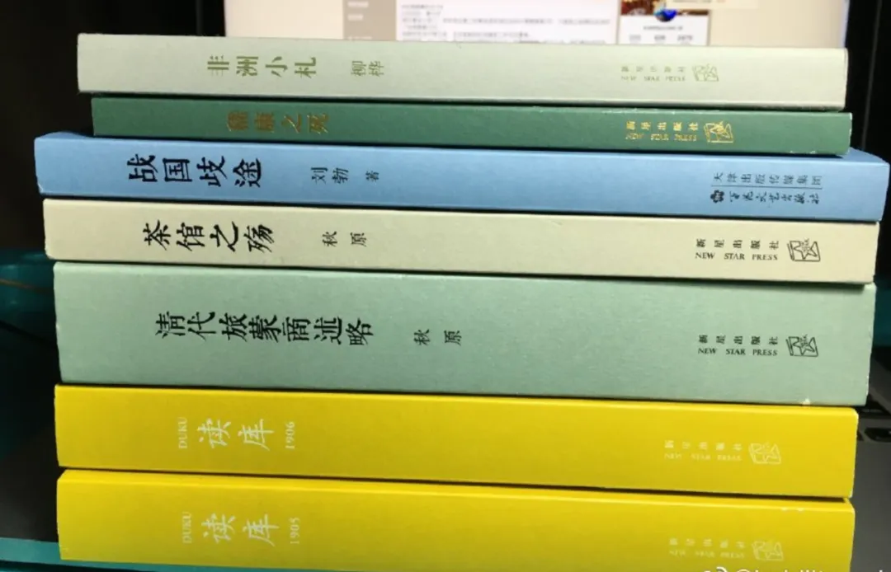
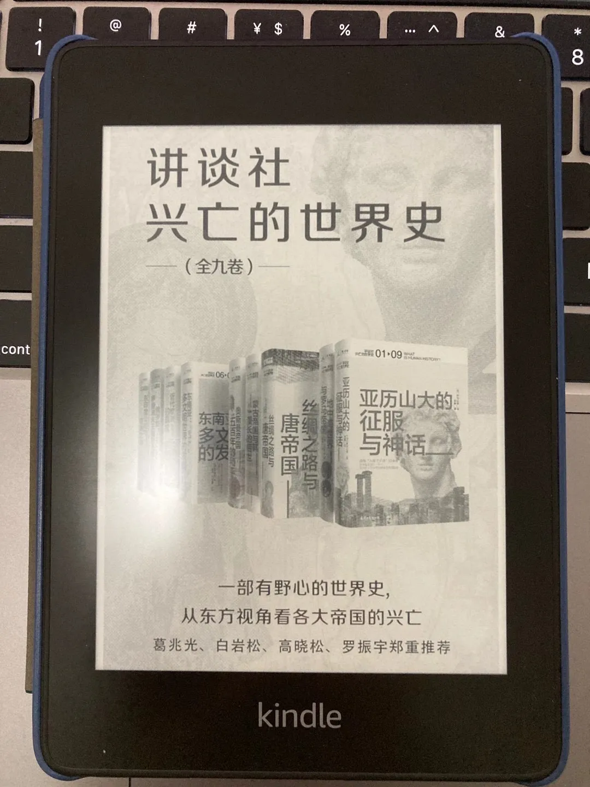
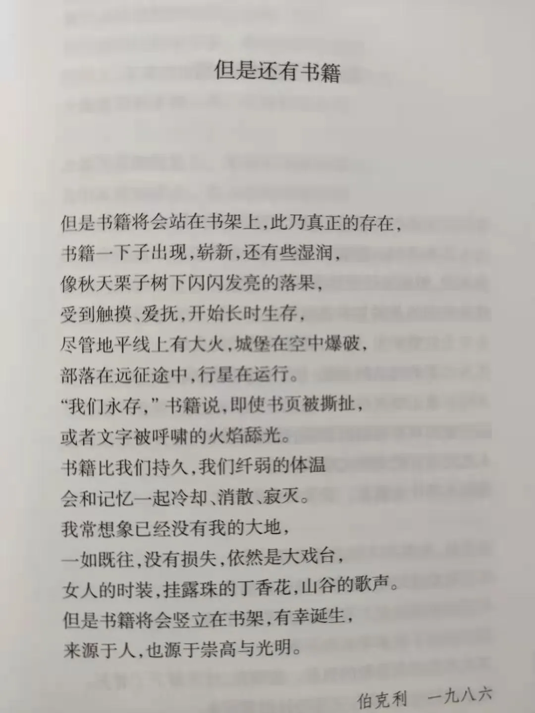

但是还有书籍
按照惯例首先要感慨一句“这一年过得真快”，今年的情况还得加一句“今年是不同寻常的一年啊”。
对于个人来说，今年可以用两个词概括“忙碌”和“收获”。所以读书这个事情自然就受到一些影响，应该是近五年新低，一共读了47本，另外一本《HK第一课》豆瓣没有。
阅读媒介主要来自实体书、kindle、微信读书。实体书基本来自读库，除了MOOK其他都是疫情隔离读完了去年双11从读库囤的几本书。下半年带娃或者一些非常碎片的时间陆陆续续在微信读书读了几本。其他全来自于通勤路上通过kindle读的。
按时间维度拉一个list记录这特殊一年的读书时光。
瘟疫与人
疫情带起了一波瘟疫相关的书单和片单，这本书也是来自于这样的书单。本书从微生物如何改变世界历史的视角，分析疾病对人类发展、战争、宗教等等的影响。书是回深路上全副武装，甚至kindle也是用保鲜膜裹着。如此阵势读这样一本书多了一份庄重感。
一堆读库出品

这些书是来深圳后在家办工，那会儿的政策一天一变社区也不确定要不要自我隔离索性就叫我自我隔离了14天，我也乐得其中，多么珍贵的独处时光啊。在这个难得的14天里看完7本书。
-
《非洲小札》，薄薄的小书里面都是一些独立的小故事，随时拿起来读都行。都是一些生活琐事，但写得非常有趣，特别适合睡前阅读。
-
《嵇康之死》，小小一本100多页，晚饭前后举着书在客厅边走边看完的。嵇康用现在的话来说就是斜杠青年，诗人/音乐家/铁匠/哲学家/美男子/“公知”（独立知识分子）。“竹林七贤”这个组合实际上后世是“炮制”出来的，实际上这七贤当中有的人之间根本就毫无交集，更别谈一起在竹林之下，喝酒、纵歌，肆意酣畅。
-
《茶馆之殇》。由相声《皮裤胡同凶宅奇案》和老舍的茶馆，带出茶馆的历史，和相声的发展史。考据翔实，内容有趣。
-
《清代旅蒙商述略》，虽然书名为“述略” ，实际上一点也不略，30多万字。
秋原老师的书一大特色就是像一个枝繁叶茂的书，本身主干就是比较冷门的话题，比如本书的晋商发展历史。从主干又能延伸出很多分支，每个分支上叶子还异常茂盛，比如本书中清朝的边疆历史；大盛魁、复盛公这些老字号之间的商战；商号之兴衰演变史与清朝国运节奏的关系；外蒙古独立的历史背景等等。总之爬史料之细令人发指，特别适合一口气读完酣畅淋漓，过瘾。
另外两本19年的读库MOOK。
讲堂社世界史

其实到现在这9本书的内容几乎都忘记了，直接复制当时的朋友圈。
记录一下对这套书的大概印象。坦白说这种多人合作的作品，质量参差不齐。比如《地中海世界与罗马帝国》就有点水，基本上就是把罗马时代人物事件流水账。《东南亚》更是文不对题，实际上基本叙述吴哥王朝史，尤其是人名特别拗口读起来更生涩。
《亚历山大的征服与神话》有严肃辩证评价亚历山大功绩，也有通俗的历史叙事。看完第一感觉是《亚历山大》这部电影还不错，基本符合历史。
个人比较喜欢《丝绸之路与唐帝国》，和我们传统的中国西方史观不一样，中亚视角以胡商的代表粟特人为线索讲述的历史。角度新颖，不过游牧民族缺乏文字记录，很多结论欠缺证据。《蒙古帝国与其漫长的后世》和丝绸之路差不多，喜欢的原因胜在视角但缺乏一定的历史严谨性。当然我的个人观点也是受我的民族观和中国中心史观影响，希望后面能深入了解内亚史。
《奥斯曼帝国：五百年的和平》《俄罗斯：罗曼诺夫王朝的大地》可以作为奥斯曼和俄罗斯入门读物。看了原版目录才发现俄罗斯第九章苏联部分被直接删除，真是简单粗暴。
《近代欧洲的霸权》梳理了欧洲近现代历史，从工业革命到一战后。《东印度公司与亚洲之海》和其他8本讲述国家民族不一样的是通过东印度公司的兴亡，再现全球两百年的激变，整套书里面最有意思的一本。
总的来说整套书是很好的世界史通俗读物。四星好评。
以纸为桥
读库的小册子，讲述日本石卷造纸厂遭遇地震和海啸冲击后工厂员工们如何自救重启，一年后生产完全恢复的故事。看这本书的过程中我总会不自觉将这些壮烈的悲伤的温暖的故事和其背后日本国民性甚至日本足球进行关联。当然这些大灾难后的悲壮故事在我们国家也许更多更悲壮，但总感觉有些不一样，却表达不出来。
十二月年度最佳
很巧，年度最佳的几本书都是在12月读到。
- 《回归故里》
这本书用一个词概括可以是“深刻”，从阶级的角度去思考自己和父母兄弟，和故乡的关系。从父亲的死引出家庭阶级、教育、性向、政治等问题，从逃离自己到找回自己。
- 《我的二本学生》
“中国二本 院校的学生，从某种程度而言，折射了中国最多数普通年轻人的状况，他们的命运，勾画出中国年轻群体最为常见的成长路径”
“哪怕二本院校的孩子，还是可以通过教育改变命运”
封底这两句话，不能同意更多。作为这个巨大群体中的一员，读这本书尤其是读到06级学生的成长路径、思想理念、就业前景感到强烈的共鸣。书中这些06级的学生或多或少都能在自己或者同学当中找到影子。
出生农村，父母大多从事农业、打零工或者外出打工来维持家庭开销，是村里少有的大学生，是家庭摆脱贫困走出农村的希望。从小地方出来到大学，浑身上下散发着农村的土气，没见过世面显得拘谨，羡慕城里孩子那么洒脱、会来事儿。毕业后的选择，回家乡进入体制还是留在城市，留在城市又要面临这几年飞涨的房价。上车早的也许已经通过房价实现财富自由，上车晚甚至没赶上的不得不面临留不下的城市和回不去的故乡。
- 《打开一颗心》
这是一本开始了就不愿意放下的书，作者是心外专家。本书是作者从业经历中的一些经典案例，每一个都让人惊心动魄。通过一些案例揭示人间百态，爱与悲伤。
看了一年，能记住的就这么多，其实看书也不用非得记住。明天就是2021年，虽然说在物理时钟上，跨年也就是从上一秒到下一秒，本质上没有任何区别。但我们总是希望能赶走上一年的不愉快，迎来新年的快乐。继续支棱起来，读下去。不管怎么样，但是还有书籍。

偷群友的图